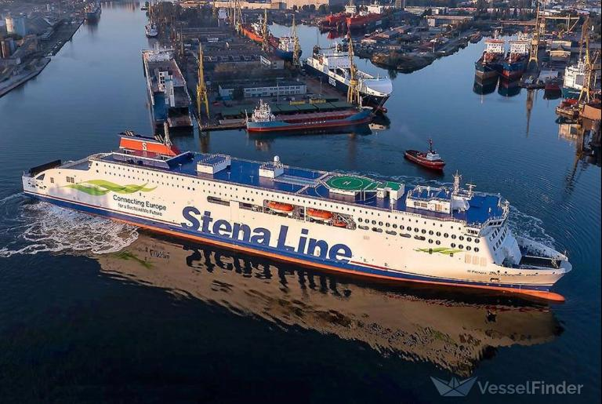
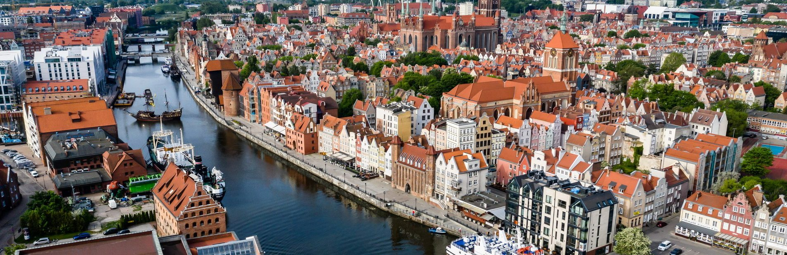

Szkoła: Technikum TEB Edukacja Gdańsk
Kierunek: Technik Programista
Klasa: 1K
Jestem uczniem Technikum. Interesuje się Statkami i grami komputerowymi. Jeszcze nie wiem kim zostanę w przyszłości, ale uważam żę programowanie to przydatna umijętnąść. Na tej stronie opisuje swoje hobby i swoją miejscowość.
Statek – każde urządzenie transportowe, które jest zdolne do pokonywania przestrzeni w sposób dla niego charakterystyczny, ale inny niż w oparciu o stały ląd. W szczególności może pływać pod powierzchnią wody, na jej powierzchni, unosić się w atmosferze lub w przestrzeni kosmicznej. Może mieć własny napęd i urządzenia sterujące, lub być uzależniony od innej jednostki.
Strona internetowa poświęcona statkom: https://www.vesselfinder.com.
Gdańsk (kaszub. Gduńsk[6]; niem. Danzig; łac. Gedanum, Dantiscum[7]; niderl. Danswijk[8]) – miasto na prawach powiatu w północnej Polsce w województwie pomorskim, położone nad Morzem Bałtyckim u ujścia Motławy do Wisły nad Zatoką Gdańską.
Centrum kulturalne, naukowe i gospodarcze oraz węzeł komunikacyjny północnej Polski, stolica województwa pomorskiego. Ośrodek gospodarki morskiej z dużym portem handlowym. Gdańsk z 470 633 mieszkańcami[5] zajmuje szóste miejsce w Polsce pod względem liczby ludności, a siódme miejsce pod względem powierzchni – 263,44 km²[4]. Ośrodek aglomeracji trójmiejskiej, nazywaną też gdańską, wraz z Gdynią i Sopotem tworzą Trójmiasto.
Strona internetowa Gdańska: https://www.gdansk.pl.
